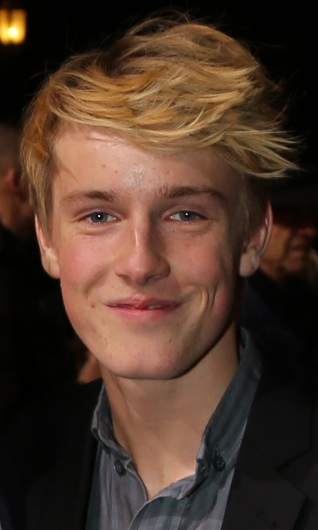
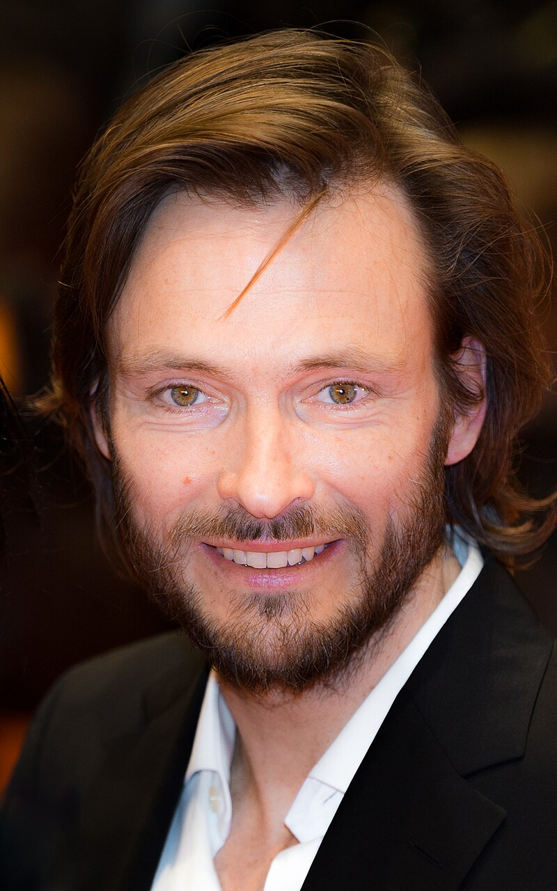
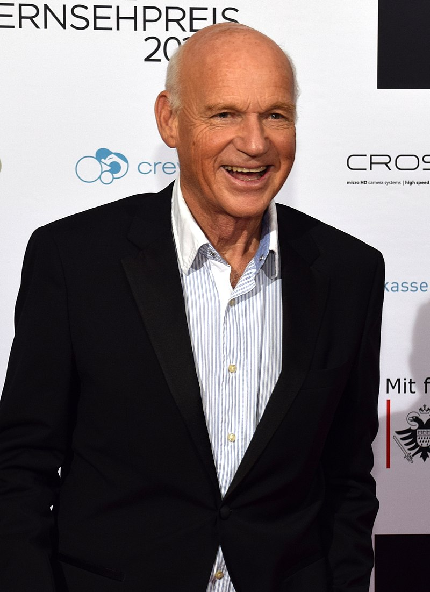
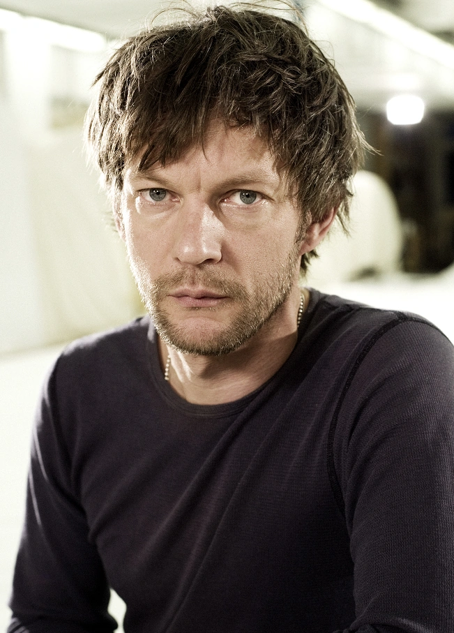
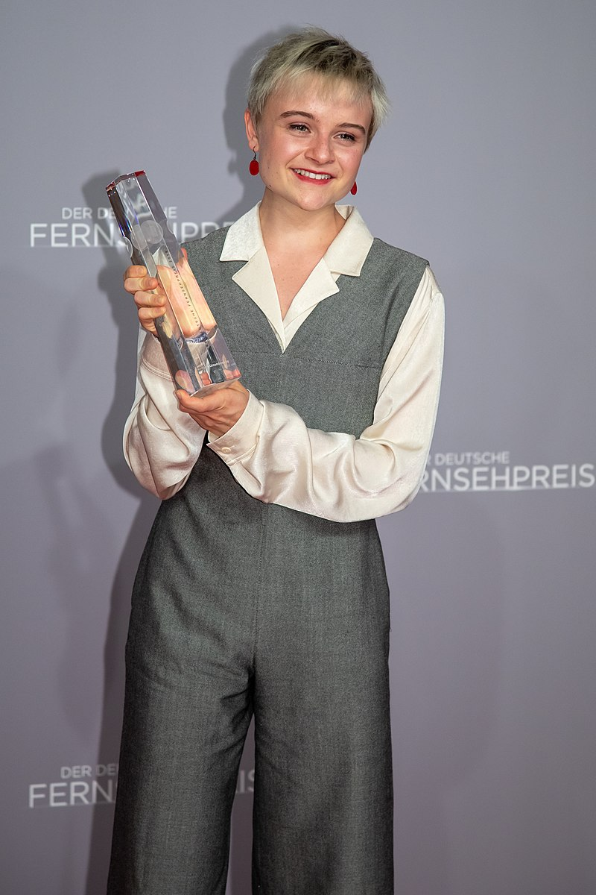
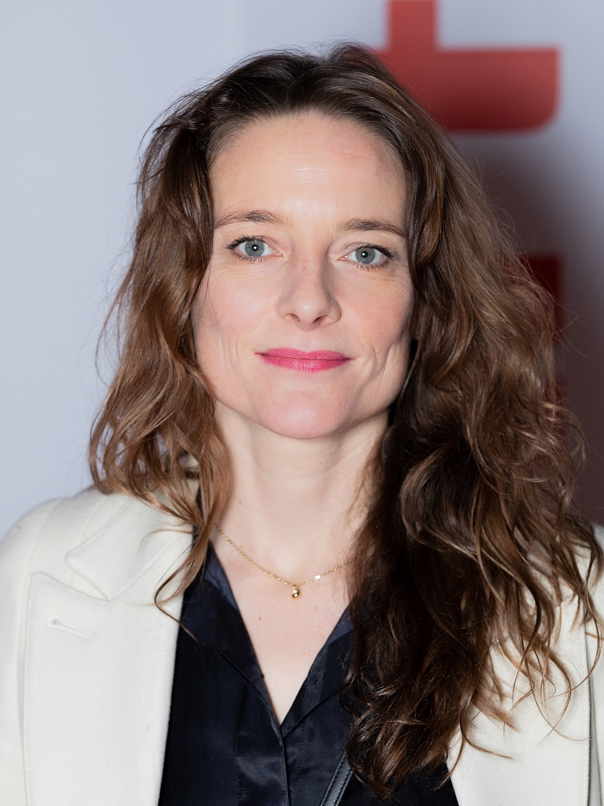
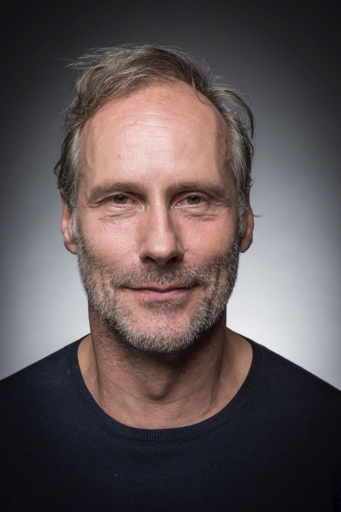
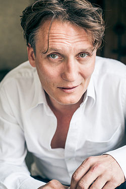
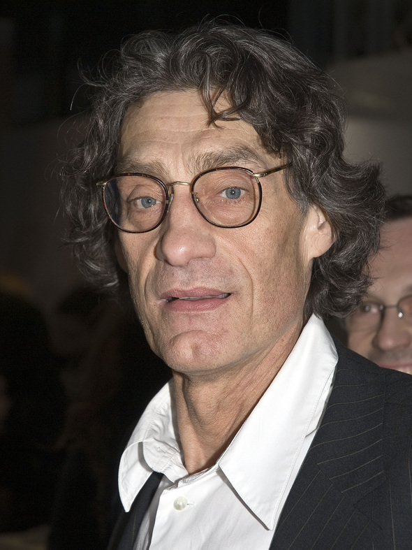

Elenco y Personajes
La primera temporada tiene lugar principalmente en 2019, pero se expande para incluir historias ambientadas en 1986, 1953 y, en la escena final de la temporada, 2052, con varios personajes interpretados en varias edades por múltiples actores.
La segunda temporada tiene lugar varios meses después de la primera, describiendo las historias iniciales en 2020, 1987 y 1954, respectivamente, mientras continúa la historia en 2053 y agrega una quinta historia, establecida en 1921.
La tercera temporada tiene lugar varios meses después de la segunda, describiendo nuevamente las historias en 2020, 1987 y 1954, mientras continúa la historia en 2053 y 1921 y agrega una sexta historia, establecida en 1888 y asimismo un mundo alternativo que transcurre en los años 1987 y 2020.
El elenco de esta serie es muy numeroso debido a que los personajes se situan en distintas lineas de tiempo. A continuacion, veremos los principales personajes de la serie en sus distintas generaciones.
Personajes Principales
Jonas Kahnwald
- La version mas joven de este personaje es un estudiante de secundaria afectado por el suicidio de su padre. Interpretado por el actor Louis Hofmann. 
- Viajero en el tiempo, tambien conocido como "The Stranger" ("El extraño"). Interpretado Andreas Pietschmann. 
- Líder de Sic Mundus, también conocido como "Adam" ("Adán"). Interpretado por Dietrich Hollinderbäumer. 
Mikkel Nielsen/Michael Kahnwald
-
La version mas joven como hijo menor de Ulrich y Katharina. Interpretado por
Daan Lennard Liebrenz.

- Padre de Jonas Kahnwald y artista cuyo suicidio inicia con toda la serie. Interpretado por Sebastian Rudolph. 
Hannah Kahnwald
-
Su primera version en realidad es Hannah Krüger, una joven tímida. Interpretada por la actriz
Ella Lee.

-
Madre de Jonas y mujer de Michael/Mikkel, quiropráctica y madre de Silja. Interpretada por
Maja Schöne.

Ines Kahnwald
- Ines es una enfermera que trabaja en el hospital de Winden. Es una mujer reservada pero protectora, especialmente con Mikkel Nielsen. Interpretada por Lena Urzendowsky. 
- Ya en un rol de madre adoptiva de Mikkel, y enfermera en el hospital. Interpretada por Anne Ratte-Polle. 
-
Abuela de Jonas. Interpretada por
Angela Winkler.

Martha Nielsen
-
Hija mediana de Ulrich y Katharina, novia de Bartosz e interés amoroso de Jonas. Interpretada por
Lisa Vicari.

-
Sobreviviente del apocalipsis, miembro de Erit Lux. Interpretada por
Nina Kronjäger.

-
Se convierte en Líder de Erit Lux, tambien conocida como "Eva". Interpretada por
Barbara Nüsse.

Magnus Nielsen
-
Hijo mayor de Ulrich Nielsen y de Katharina. Interpretado por
Moritz Jahn.

- Miembro de Sic Mundus. Interpretado por Moritz Jahn. 
Ulrich Nielsen
-
Estudiante de secundaria afectado por la desaparición de su hermano. Interpretado por
Ludger Bökelmann.

- Marido de Katharina; padre de Magnus, Martha y Mikkel; oficial de policía. Interpretado por Oliver Masucci. 
- Paciente en una sala de psiquiatría, conocido como «El comisario». Interpretado por Winfried Glatzeder. 